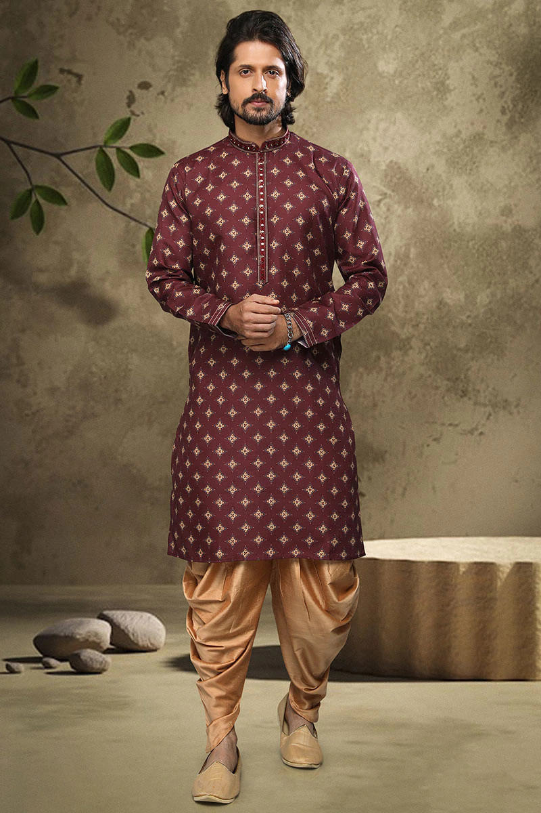

Breeches-Kurta
Breeches and kurta are the traditional wear of the Kumaoni tribes. They consist of knee-length shirts and tight-fitting pants. The breeches come in innovative colours like beige and white. Pure cotton fabrics are used during the weaving of the shirt. The kurta is made of silk or cotton with simple prints and marvellous embroidery.